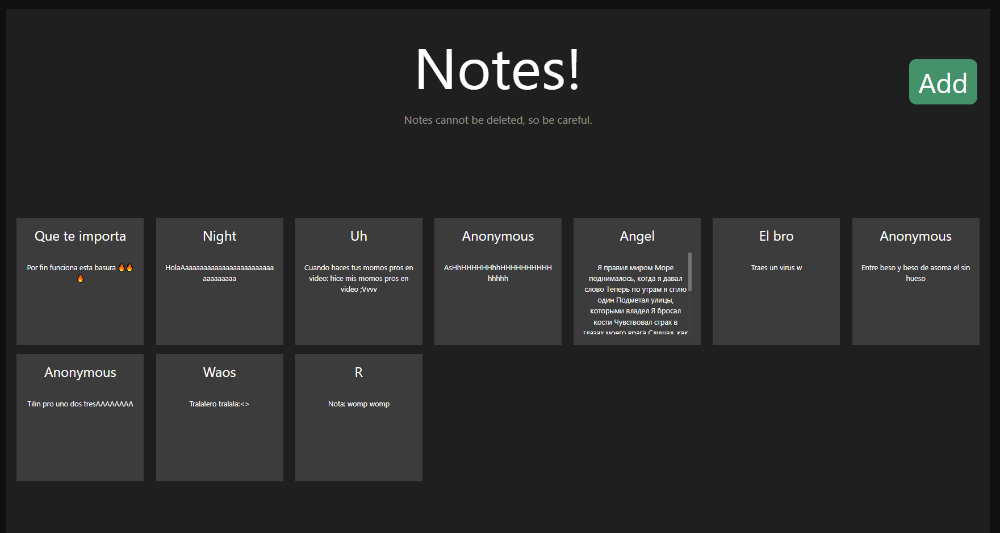

TypeScript
Notes
Repositorio de la aplicaciónNotes es una aplicación web de notas públicas, o sea, es un contenedor de notas que todo el mundo que entre a la página puede ver. Las notas se guardan en una base de datos PostgreSQL, así que las notas no se pierden.
Cualquiera que entre a la página puede crear y publicar su propia nota con el contenido que quiera; tienen la posibilidad de poner el autor si lo desean o, si no lo ponen, saldrán como “Anonymous”.
Usé Socket.IO para poder hacer que las notas se publiquen en tiempo real para todos los clientes activos en la página, así que no tendrán que recargar la página para ver las notas nuevas.
